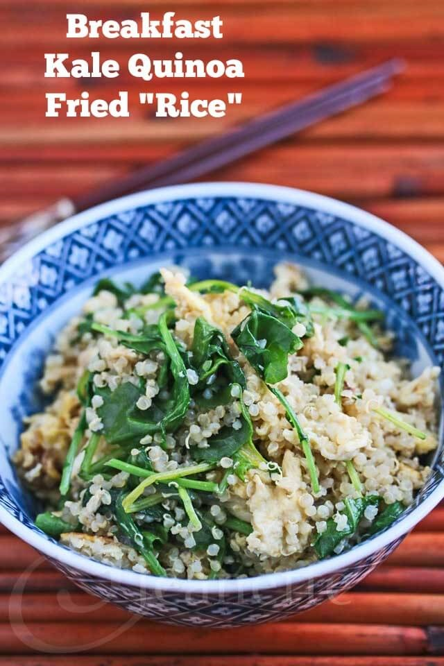
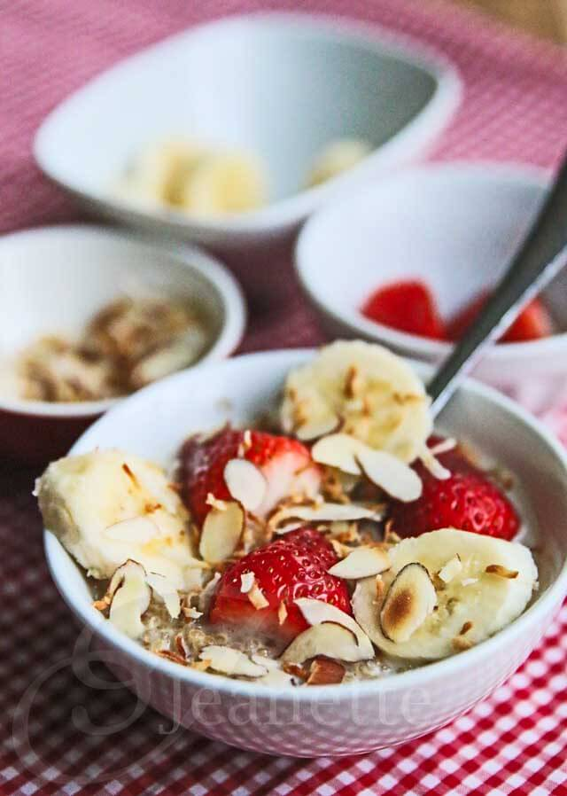
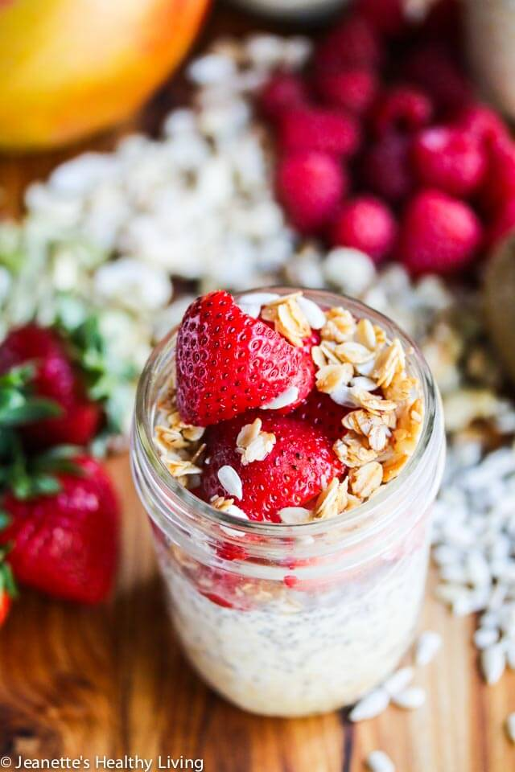

Welcome
Hi! I'm Katie - welcome! Step into my life, where you'll find allergy-friendly lifestyle tips and recipes.
Read More


Breakfast Recipes:
Breakfast Kale Quinoa "Fried Rice"

Ingredients
- 2 teaspoons olive oil
- 3 cloves garlic minced
- 2 large eggs whisked lightly
- 2 cups cooked quinoa
- 2 teaspoons vegetarian oyster sauce
- 1/2 teaspoon sesame oil
- 2 cups baby kale
- 1 teaspoon rice wine
Instructions
- Heat oil in a wok or skillet. Add garlic and saute until lightly browned. Add eggs and scramble until almost done. Add quinoa and toss well. Add rice wine, oyster sauce and sesame oil. Toss quinoa well to ensure even seasoning. Add baby kale, turn off heat and toss a few more times to just cook kale through.
Breakfast Coconut Milk Quinoa with Fresh Fruit

Ingredients
- 1/2 cup uncooked quinoa rinsed, drained
- 1/3 cup coconut milk
- 3/4 cup water
- 2 tablespoons organic raw coconut sugar
- 1 teaspoon vanilla
- dash sea salt
- 2 tablespoons toasted coconut
- 2 tablespoons toasted almonds
- 1/2 cup fresh strawberries
- 1/2 cup sliced bananas
Instructions
- Place quinoa, coconut milk, water, sugar, vanilla and salt in saucepan. Bring to a boil; reduce heat to low and cook, covered, for 15 minutes. Turn heat off and let sit for 5 minutes. Spoon into serving bowls and top with toasted coconut, almonds, strawberries and bananas.
Healthy Overnight Oatmeal

Ingredients
- 2 1/2 cups oatmeal quick or rolled
- 2 1/2 cups soy milk or other non-dairy milk
- 5 tablespoons chia seeds
- 5 tablespoons maple syrup
- 1 1/4 teaspoons vanilla
- 2 1/2 cups fresh fruit
- 5 tablespoons nuts toasted
Instructions
- Scoop 1/2 cup oatmeal into each of 5 mason jars (I used 1/2 pint jars). Add 1/2 cup milk, 1 tablespoon chia seeds, 1 tablespoon maple syrup, and 1/4 teaspoon vanilla to each jar. Stir contents of each jar; cover and refrigerate overnight. Top each jar with 1/2 cup of fruit and 1 tablespoon of nuts.